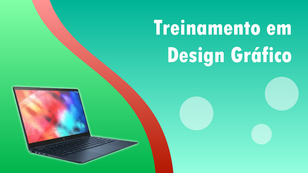
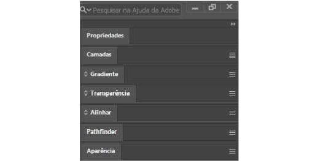

Neste tutorial aprenderemos as ferramentas básicas do Illustrator para criar desenho vetorial da mesma maneira que fizemos inicialmente com o Inkscape. Este tutorial apesar de simples oferece conhecimento das ferramentas mais essenciais para o desenho.
Para fins de aprendizagem, alguns recursos deste tutorial podem ser acessados tanto nos menus como na janela Propriedades mas optamos por utilizá-los diretamente em sua própria janela dedicada.
Veja abaixo a arte que deveremos criar neste tutorial:
1. Abra o Illustrator.
2. Clique em Criar. A janela Novo Documento será exibida, configure o novo arquivo da seguinte maneira:
3. Em Nome do Arquivo digite “Tutorial Illustrator”.
4. Selecione a unidade de medida como Pixels.
5. Defina a largura como 1280px e a altura como 720px.
6. Escolha o modo de cores RGB.
7. Defina a resolução como 300px.
8. Clique em Criar.
Temos nosso arquivo novo criado com uma prancheta nas dimensões certas e já com o modo de cor configurado. No entanto, se você tivesse que configurar essas propriedades após criar um arquivo novo, pode alterá-las na janela Propriedades, clicando em Editar Pranchetas → Opções da Prancheta. A janela de propriedades pode ser ativada no menu Janela.
Salve o desenho em sua pasta.
Neste tutorial aprenderemos a utilizar alguns recursos do Illustrator que estão presentes em janelas de encaixe que podem ou não vir ativadas por padrão na primeira vez que você abrir a aplicação. Então para isso, vamos ativar as que não estiverem.
Para ativar uma janela de encaixa, clique no menu Janela, procure pela janela em questão na lista e clique. Precisaremos das seguintes janelas: Propriedades, Camadas, Gradiente, Transparência, Alinhar, PathFinder, Aparência. Após inseri-las, arraste para a lateral direita da tela e encaixe-as uma abaixo da outra. Como podemos ver abaixo:
A primeira coisa que devemos saber ao utilizar o Illustrator pela primeira vez é o uso do mouse e do teclado. Bem, em versões mais antigas do Illustrator, provavelmente o comportamento do mouse para o zoom ou arrastar a tela pode ser diferente, como necessitar da Barra de Espaço para mover a tela ou da tecla Control para aumentar ou diminuir o zoom, nas versões mais recentes isto pode ser feito apenas com o mouse, da seguinte forma:
Mover a tela : Clicando e arrastando com a scroll do mouse.
Ajustar o zoom : Girando a scroll do mouse.
Em seguida devemos saber selecionar objetos, mover ou distorcê-los, o que podemos fazer da seguinte forma:
Selecionar objetos : Utilize a ferramenta Seleção (V).
Mover objetos : Selecione um objeto com a ferramenta Seleção, clique sobre o objeto e arraste.
Girar objetos : Com o objeto selecionado e a ferramenta Seleção ativa, aproxime o cursor perto de uma das extremidades do objeto até que ele mude de formato para uma alça curva, clique e arraste para girar.
Duplicar objetos : Com a ferramenta Seleção ativa e o objeto selecionado, clique e arraste segurando a tecla Alt.
Espelhar objetos : Com o objeto selecionado clique no ícone Virar Horizontalmente ou Virar Verticalmente na janela Propriedades.
Em primeiro lugar vamos criar o retângulo de fundo e aplicar uma cor a ele:
1. Selecione a ferramenta Retângulo, que pode estar dentro de um conjunto, verifique se encontre uma ferramenta de forma básica como retângulo, elipse, estrela etc., para abrir um conjunto clique e segure.
2. Clique num dos cantos da prancheta e arraste até o canto oposto. O Illustrator tende a alinhar o desenho automaticamente. Certifique-se do retângulo estar bem encaixado na prancheta, se necessário altere seu tamanho e posição.
3. Pressione V para pegar a seleção e clique no retângulo.
4. Clique na janela Gradiente do lado direito.
5. Clique em Gradiente Linear.
6. Altere o ângulo para 90º.
7. Altere a primeira cor para um verde azulado claro e a segunda para uma variação ligeiramente mais escura.
8. Pressione P para pegar a ferramenta caneta e desenhe duas formas de trapézio encaixadas na lateral como podemos ver na imagem a seguir:
9. Aplique a cada uma um gradiente, apenas mude as cores e a direção do degradê (do mais escuro para o mais claro).
10. Vamos agora criar os círculos no espaço vazio. Pegue a ferramenta Elipse, e com a tecla Control pressionada, clique e arraste para desenhar o primeiro.
11. Clique duas vezes no ícone Preenchimento, na parte inferior da Barra de Ferramentas.
12. Defina o preenchimento como branco e confirme.
13. Agora na janela Transparência, defina a opacidade como 50%.
14. Duplique o círculo criando mais duas cópias, mova-as e altere seus tamanhos como desejar.
1. Nosso próximo passo é editar as curvas dos quadriláteros que criamos na lateral esquerda, para isso utilizamos a ferramenta Ponto de Ancoragem.
2. Clique na ferramenta Ponto de Ancoragem.
3. Selecione o primeiro dos quadriláteros.
4. Clique na borda que deve ser curvada e arraste.
5. Ajuste as alças.
6. Faça o mesmo com a outra forma.
1. Pressione T para pegar a ferramenta Tipo.
2. Clique na tela e digite: Treinamento em Design Gráfico.
3. Na janela Propriedades, altere as propriedades do texto para:
Fonte: Tw Cen MT Condensed Extra Bold
Alinhamento: À Direita.
Tamanho: 100.
4. Na Barra de Ferramentas, altere a cor do preenchimento para branco.
5. Posicione no desenho.
1. Agora vamos inserir a imagem do notebook no desenho e aplicar um leve brilho branco ao seu redor para destacá-lo do fundo.
2. Clique no menu Arquivo → Inserir, navegue até a pasta de Imagens do curso. Escolha o arquivo Notebook.png.
3. Altere o tamanho e posicione dentro do desenho.
4. Para aplicar o brilho, clique na janela Aparência. Selecione Adicionar novo efeito → Estilizar → Brilho externo.
5. Configure o novo efeito da seguinte forma:
Cor: Branca.
Modo: Normal
Opacidade: 100
Desfoque: 5
6. Em seguida confirme.
Com tudo preparado, vamos exportar! O Illustrator possui ótimos recursos de exportação que utilizaremos agora:
1. Clique em Arquivo → Exportar → Exportar para telas.
2. Selecione a guia Pranchetas. E marque a prancheta com o desenho que criamos.
3. Ao lado direito escolha a pasta onde deseja salvar, desmarque a opção criar subpastas, e escolha o formato PNG. Em seguida clique em Exportar Prancheta.
Salve seu desenho.